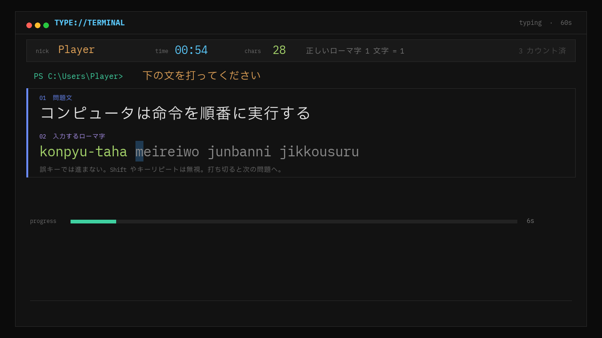
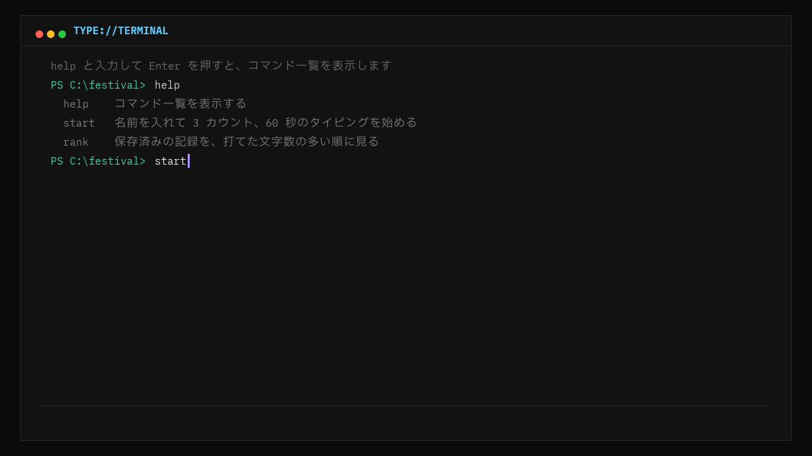
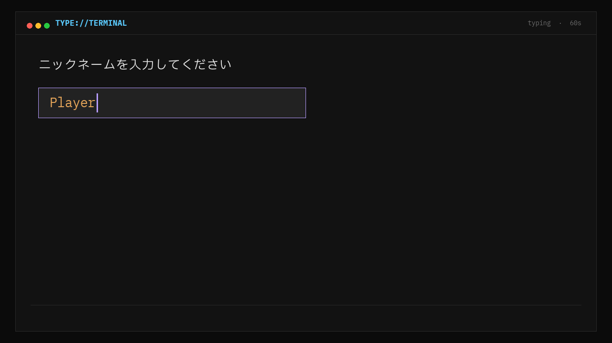
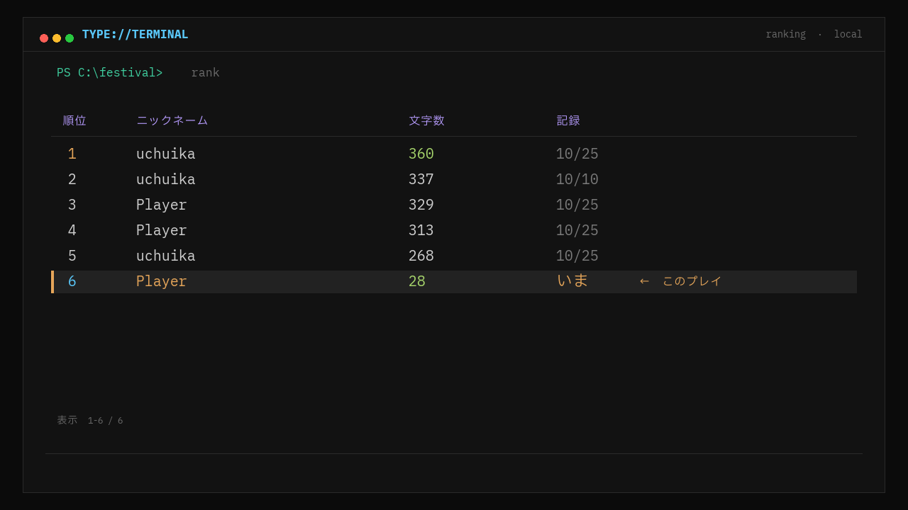

部員各位
- 文書番号
- FES-2026-01
- 作成日
- 2026年11月4日
- 作成
- ＿＿＿＿＿＿ 部
タイピングゲーム「TYPE://TERMINAL」展示運用マニュアル
実行ファイル ConsoleTyping.exe ／ 文化祭展示用
本書は、展示当番の部員が来場者にゲームを案内するための手順書です。1〜3 は来場者に説明してよい内容、4 は部員だけが知っておく内容です。
1.ゲームの概要
PowerShell のような黒い画面で遊ぶ、ローマ字のタイピングゲームです。画面に出た日本語の文を、下に表示されたローマ字のとおりに打ちます。60 秒で正しく打てた文字数がスコアになり、その日の来場者同士でランキングを競います。
制限時間60 秒
スコア正しいローマ字 1 文字 = 1 点
間違えたキー進まない（減点なし）

問題の順番は全員同じです。「し」は shi でも si でもよいなど、よく使うローマ字の打ち方はほぼ受け付けます。伸ばす音「ー」は - キーです。
2.ゲームのスタート方法

- メインメニューで start と打ち、Enter を押す。
- ニックネームを英数字で入力し、Enter を押す。何も打たなければ「Player」になる。不適切な言葉は登録できない。
- 3 カウントのあと、60 秒のタイピングが始まる。

- 時間切れになるとスコアが表示され、自動でランキング画面に移る。今回のプレイには「← このプレイ」の印が付く。
| コマンド | 内容 |
|---|---|
| help | コマンド一覧を表示する |
| start | 名前を入れて 3 カウント、60 秒のタイピングを始める |
| rank | 保存済みの記録を、打てた文字数の多い順に見る |
打ち間違えたコマンドは Backspace で 1 文字、Esc でまとめて消せます。プレイを途中でやめるときは Esc を押し、「やめる？」で Enter を押すとメニューに戻ります（記録は残りません）。
3.ランキングの表示方法

- メインメニューで rank と打ち、Enter を押す。
- ↑ ↓ キーで上位 20 位までスクロールできる。
- Esc でメインメニューに戻る。
4.ゲームの終了方法部員のみ・来場者には案内しない
ゲーム内に終了コマンドはありません。全画面表示をウィンドウ表示に戻してから閉じます。
- Alt を押しながら Enter を押し、ウィンドウ表示にする（もう一度押すと全画面に戻る）。
- ウィンドウ右上の閉じるボタン × を押す。
ランキングは scores.json（exe と同じフォルダ）に自動保存されます。終了しても記録は消えません。このファイルを削除・編集しないでください。
5.困った時の連絡先
画面が固まった、キーが効かない、記録がおかしいなどの場合は、下記の担当者に連絡してください。
| 担当 | 氏名 | 学年・組 | 連絡方法 | 対応時間 |
|---|---|---|---|---|
| 開発担当 | ||||
| 当日責任者 | ||||
| 顧問 |
以上